25 OCTOBER 2026 · SOFTWARE MESH REVIEW
Wardrobe, Shopping
and Home Decorating
These are software renders of the shipped geometry with simplified lighting. They are not browser screenshots, the live catalogue interface, native-touch evidence or Android performance results. The owner accepted the previous corrections; this new milestone awaits live visual review.
Play the local game · Implementation and test report · Exact item manifest · Acceptance journey results
35 fashion entries
11 hair presentations plus bare head; three outfit bundles reuse components. Bob and long wig adapt the same CC0 source. Recolours are not extra models. Original additions and retained CC0 assets; no purchases.
Hair
 Beaded long braidsLong individual braids with gold cuffs.Starter · owned
Beaded long braidsLong individual braids with gold cuffs.Starter · owned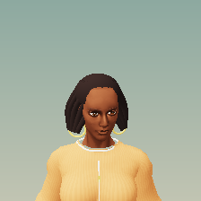
Shoulder locsThicker, softly curved locs.Starter · owned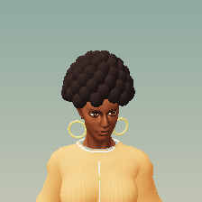
Rounded afroFull rounded textured crown.Starter · owned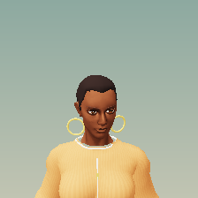
Close cropFitted Quaternius CC0 short cut.Starter · owned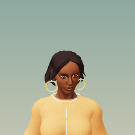
Soft bob wigShaped jaw-length CC0 hair adaptation.Starter · owned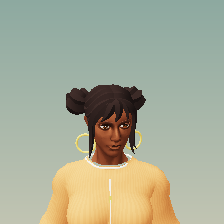
Twin updoQuaternius CC0 gathered twin buns.Starter · owned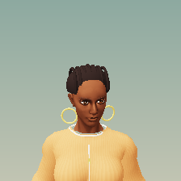
Swept cornrowsRaised scalp-following rows and a nape finish.₦850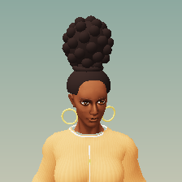
High puffSculpted high afro puff with a gathered base.₦900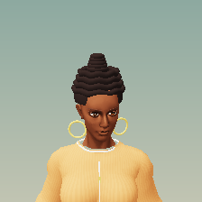
Twist crownWrapped twists gathered into a high updo.₦1,100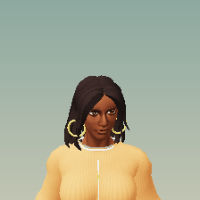
Long sweep wigShoulder-length adaptation of the retained CC0 hair.₦1,300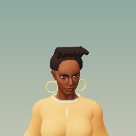
Textured pixieShort sculpted crop with a swept raised fringe.₦700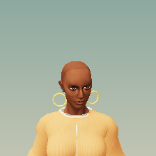
Clean shavenNo hair geometry; preserved bald option.Starter · ownedFull Outfits
 Everyday essentialsTee, slim trousers and your selected footwear.Starter · owned
Everyday essentialsTee, slim trousers and your selected footwear.Starter · owned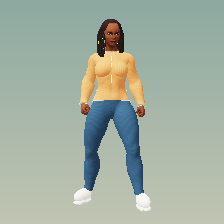
Weekend varsityLong-sleeved jacket with zip and pocket seams.Starter · owned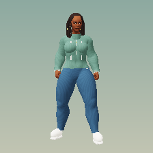
Track club setRaised zip collar, panelled sport jacket and cuffed joggers.₦1,900Tops
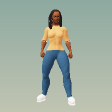
Soft cotton teeShort sleeves and a clean bound neckline.Starter · owned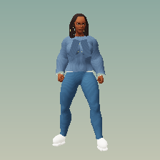
Workday blazerStructured shoulders and folded lapels.₦1,450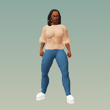
Wrap blouseRoomier sleeves, crossing front and tied waist.₦1,100Bottoms
 Everyday trousersFitted full-length trousers.Starter · owned
Everyday trousersFitted full-length trousers.Starter · owned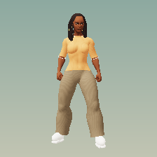
Wide-leg trousersA wider leg silhouette with a full-length hem.₦1,250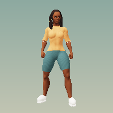
Court shortsAbove-knee sport cut with a waistband.₦650Dresses
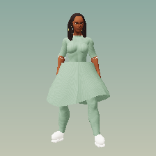
Pleated day dressKnee-length pleated skirt and fitted bodice.Starter · owned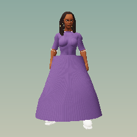
Evening columnLong flared evening skirt and boat neckline.₦2,300Native Wear
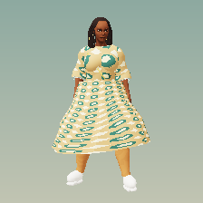
Ankara celebrationOriginal geometric print on a flared midi silhouette.₦1,800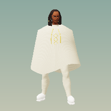
Agbada occasion setBroad draped sleeves and an embroidered outer robe.₦2,500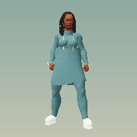
Senator tailored setLong tailored tunic, narrow collar and straight trousers.₦1,650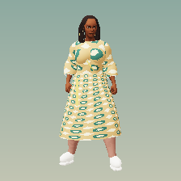
Iro & bubaLoose buba and a straight wrap-style skirt.₦1,950Shoes
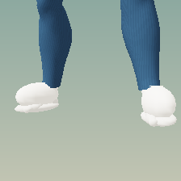
Everyday trainersRounded trainers with soles and laces.Starter · owned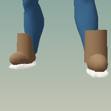
City ankle bootsHigher ankle shafts, robust soles and back tabs.₦1,100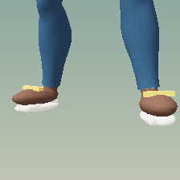
Penny loafersLow-profile vamp, raised apron and broad penny strap.₦850Accessories
Gold hoopsRigid hoops attached to the animated head.Starter · owned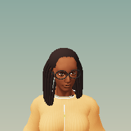
Round framesRound frames with bridge and temples.Starter · owned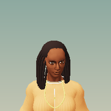
Fine chainNeck chain fitted to the upper body.Starter · owned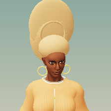
Pleated geleOriginal folded fan headwrap; hair is tucked beneath.₦950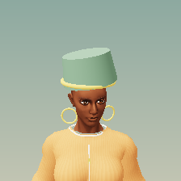
Tilted filaShaped cap with a tilted crown and woven band.₦700 Eight movable furniture pieces
The installed activity stations and existing sofa stay anchored. These catalogue pieces support purchase, placement, rotation, movement and storage.
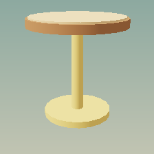
Oro side tableRound walnut top · brass foot₦600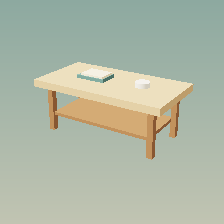
Sunday coffee tableRounded oak top · lower shelf₦1,200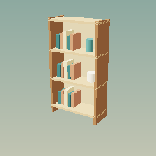
Bode bookcaseOpen shelves · books and ceramics₦1,900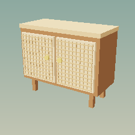
Palm woven cabinetWoven doors · raised timber legs₦1,600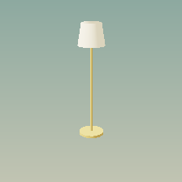
Evening floor lampWarm linen shade · brass stem₦850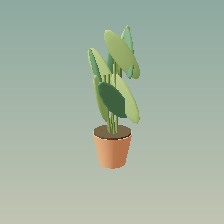
Courtyard palmTerracotta pot · sculpted foliage₦500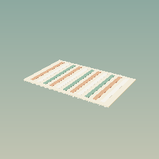
Market stripe rugWoven cream, clay and forest stripes₦750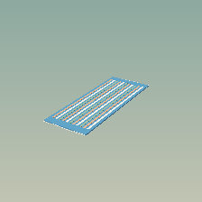
Indigo runnerNarrow woven runner · indigo border₦650A valid furnished example
Same apartment, with a bookcase, coffee table, lamp, palm and rug placed through the shipped validator. Simplified software shading; these camera views are mesh review compositions.
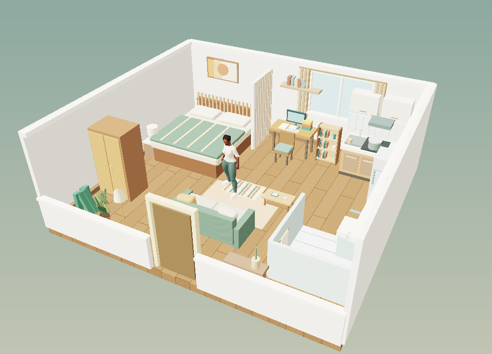
Whole apartment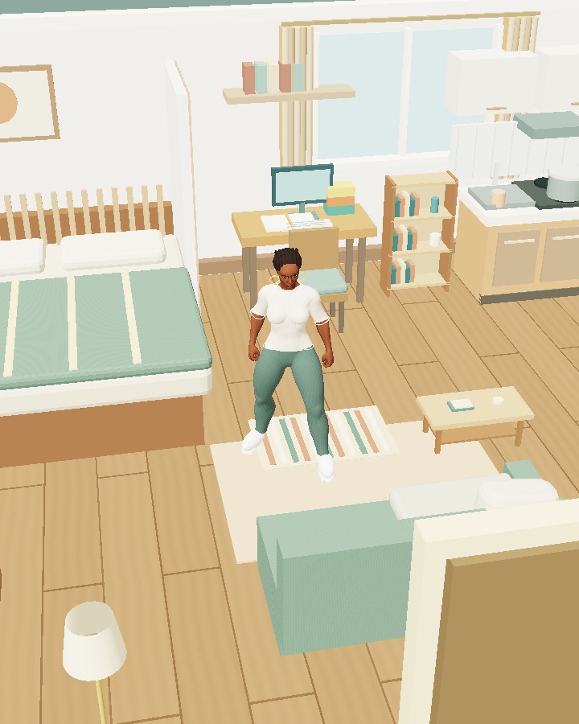
Close compositionNew hair · female broad build
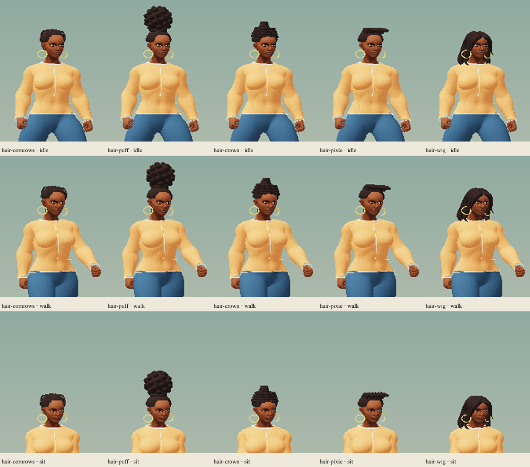
New hair · male broad build
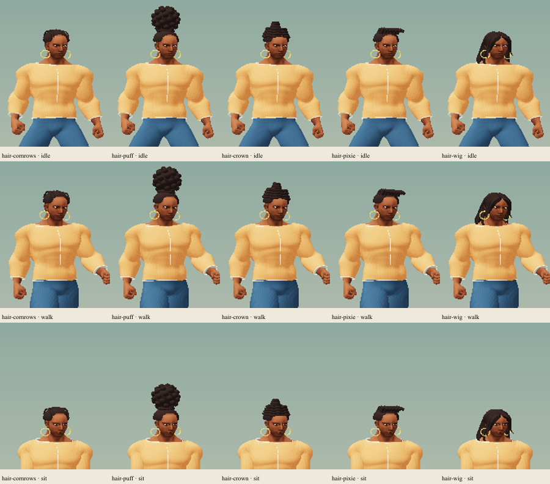
Garment silhouettes · female broad build
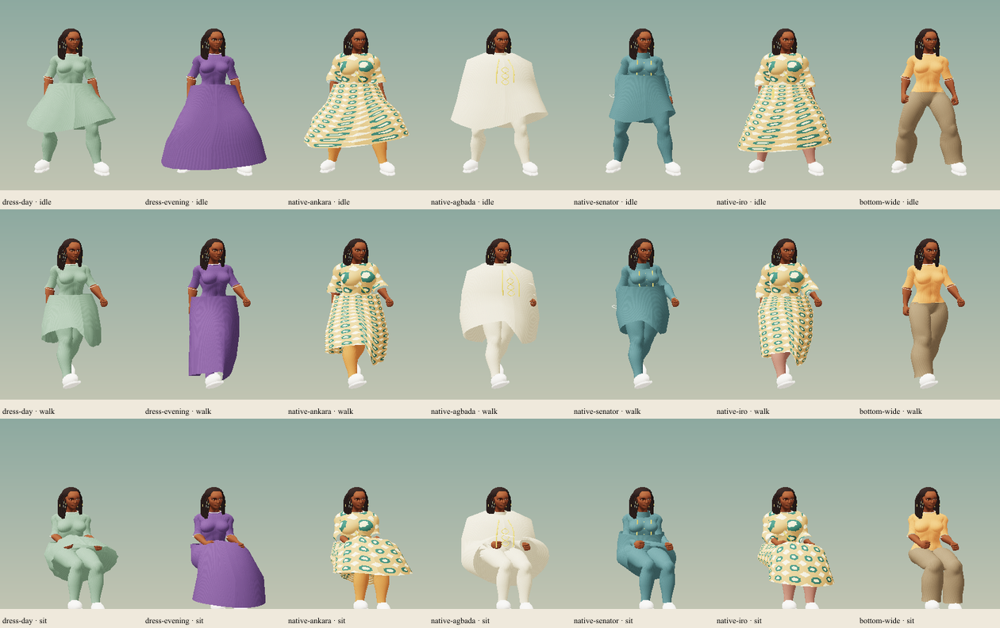
Garment silhouettes · male broad build
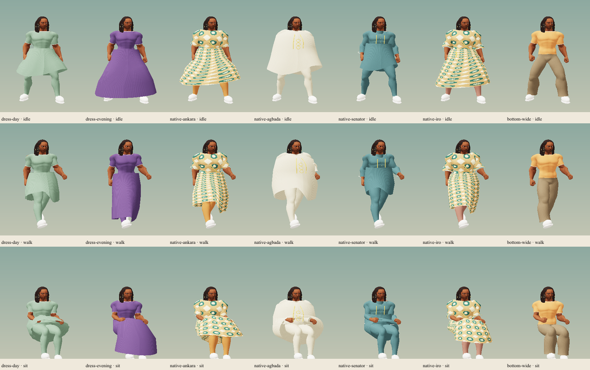
Activity fitting · female broad build
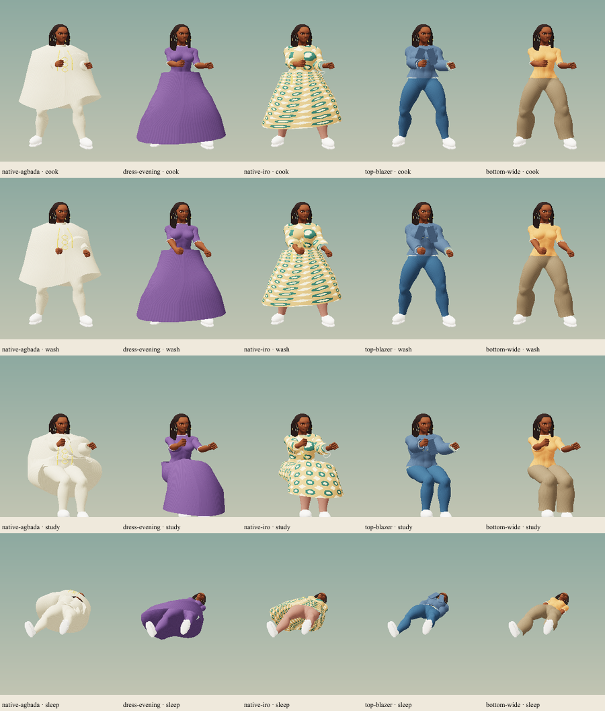
Activity fitting · male broad build
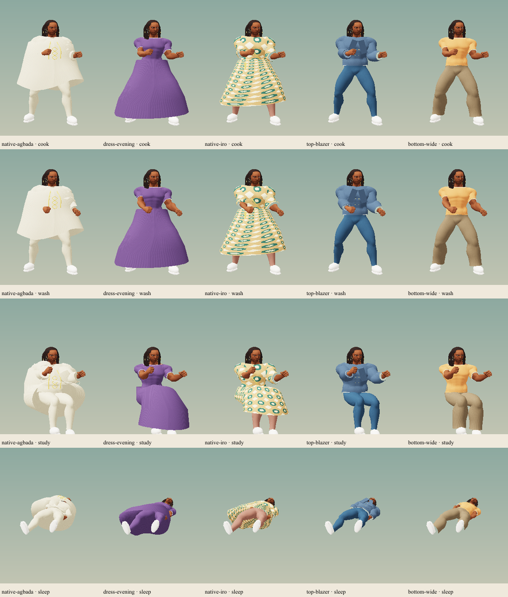
Verification boundary
The acceptance journey drove actual game code through synthetic joystick and UI handlers, with DOM, WebGLRenderer and storage doubles. It confirmed money, ownership, equipment, named looks, furniture position/rotation/storage, finishes and retained activities after reload. No user browser save was touched. No supported live browser session or Android device was available.
Use the playable game to review portrait/landscape layout, native input, real WebGL shading and garment fit. See REPORT.md for counts, source licences, fixed-fixture limits and exact test evidence.